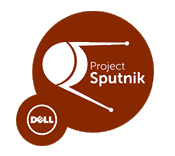

DEVICE
The XPS 13 developer edition comes with Ubuntu 12.04 LTS along with the necessary drivers and a core set of tools and utilities pre-loaded. It also comes with one year of ProSupport.
Specifications:
CLOUD LAUNCHER
The cloud launcher enables you to create "microclouds" on your laptop, simulating an at-scale environment, and then deploy that environment seamlessly to the cloud. Today the launcher utilizes Linux Containers to model your environment on your laptop and the uses Juju to jettison that environment to the cloud.
We are currently working on a second version that works using Linux Containers and Chef.
PROFILE TOOL
The profile tool is designed to provide access to a library of community created profiles, such as Ruby and Android etc, on github. The tool is then used to configure the profiles and quickly set up your development environments and tool chains.
2005-2013 The Frontside, Inc. All rights reserved.
